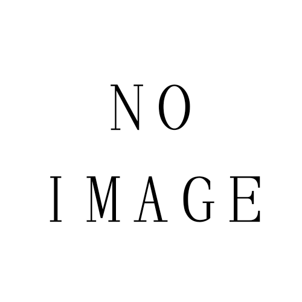

Workshop "Umikaze" ワークショップ"ウミカゼ"
Beyond Horizons本社近傍を筆頭に、オセアニア全域に拠点を構える小規模なワークショップ。
規模こそ小さいものの水準は高く、観光地のグッズ製作の請負のほか、レジャーに使用される乗り物や機材の保全、修繕、委託製造まで手掛ける。
Beyond Horizons本社近傍を筆頭に、オセアニア全域に拠点を構える小規模なワークショップ。
規模こそ小さいものの水準は高く、観光地のグッズ製作の請負のほか、レジャーに使用される乗り物や機材の保全、修繕、委託製造まで手掛ける。